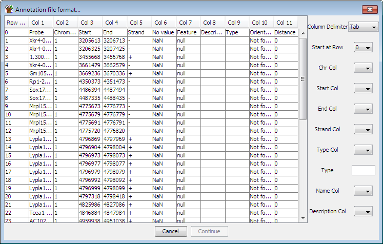

Importing an Annotation Set from a Text File
If you have genome annotations in a non-standard format then you can use the
generic text import option to bring them in to SeqMonk.
The program will present you with a view of the top of your file and series
of contols you can use to tell SeqMonk how to read the format.

To define your format simply use the drop down boxes on the right to tell
SeqMonk what character is used as a delimiter in your file, and which
columns contain which pieces of information. To import data the columns of
information you need to supply are:
- The chromosome
- The start position
- The end position
All other fields are optional, but can be useful:
- The strand - features will be marked as unknown strand if this is not supplied
- The type (eg CDS, mRNA)
- The name of the feature - this will be the location if no name is supplied
- A longer description - this will be blank if not supplied
For the type of feature there is also a text box into which you can enter a
type which will be applied to all features imported from the current file. If you don't
specify a type column or a manual type then the name of the file will be used as
the type.